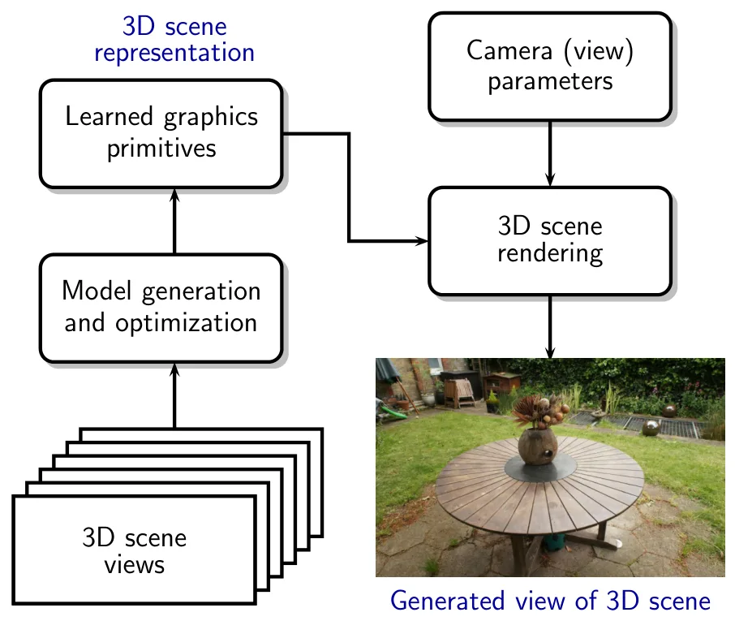

新论文 · 日期 2026-07-13 · score 29 · cs.RO
作者：Michalis Chatzispyrou, Luke Horgan, Hyunkil Hwang, Harish Sathishchandra
评分 9.4/10
多会话 SLAM视觉惯性水下建图COLMAP稠密重建
一句话工作总结：以 SVIn2、潜水深度记录、COLMAP 和固定标定靶构建低成本水下多会话轨迹与稠密三维模型。
本文提出使用低成本运动相机绘制水下环境的多会话建图框架，并以潜水电脑记录的水深增强视觉—惯性数据。系统先由开源 VI-SLAM 框架 SVIn2 为每次采集生成轨迹和稀疏重建，再将关键帧及估计相机位姿交给 COLMAP 做全局优化与稠密重建。若场景中存在固定标定靶，则据此估计不同采集会话之间的坐标变换，将各会话统一到同一坐标系。作者在巴巴多斯近海沉船上验证流程，分两次采集覆盖沉船外部与可进入的内部，第三次采集还使用…
This paper presents a framework for multi-session mapping of underwater environments utilizing an affordable action camera. The Visual-Inertial data are augmented by water depth recordings from a dive computer…

新论文 · 日期 2026-07-16 · score 12 · cs.CV, eess.IV
作者：Amir Said, Randall Rauwendaal
评分 7.8/10
3DGS模型压缩GPU 解码球谐系数实时渲染
一句话工作总结：通过颜色局部分组、基元重排和 BC1/BC7 硬件纹理解码压缩球谐系数，同时保留随机访问与并行渲染。
3D Gaussian Splatting 使用大量球谐系数描述视角相关颜色，带来较高内存占用。本文使用现代 GPU 原生支持、可硬件加速并行解码的纹理压缩格式压缩球谐颜色系数。方法根据颜色对 Gaussian 基元进行局部分组与重排，使 BC1、BC7 等格式比直接压缩二维纹理更有效；同时引入保留随机访问的码率控制策略，以支持大规模并行解码而不牺牲渲染性能。实验显示，GPU 解压可在视觉质量仅有轻微或不可察觉退化…
Techniques for modeling 3D scenes from image collections, such as 3D Gaussian Splatting (3DGS), are capable of generating high-quality novel views by leveraging graphics primitives with view-dependent appearan…

新论文 · 日期 2026-07-16 · score 11 · cs.GR, cs.AI, cs.CV
作者：NVIDIA, :, Jiahui Huang, Jiawei Ren
评分 8.8/10
3DGS前馈重建自动驾驶动态场景闭环仿真
一句话工作总结：一次前馈将短多相机驾驶日志变成静态/动态分层 3DGS 世界，约 1.5 秒完成并支持闭环仿真。
Instant NuRec 是面向自动驾驶仿真的前馈神经重建模型，可在一次前向传播中把短多视角驾驶日志转换为可完整仿真的 3DGS 世界。模型接收标定多相机系统输入，输出静态与动态 3DGS 分层、天空 cubemap 和逐相机 ISP 校正，并通过 3DGUT 原生支持非针孔相机。其可在约 1.5 秒内重建 10–20 秒多相机场景，在 Waymo Open Dataset 上的 PSNR 比最强参评基线高 2.…
3D simulation platforms are critical for autonomous driving because they enable end-to-end policy evaluation, thereby reducing development costs and improving safety. In recent years, neural simulation has bec…

新论文 · 日期 2026-07-16 · score 11 · cs.RO, cs.CV
作者：Reon Tabata, Kenji Koide, Shuji Oishi, Masashi Yokozuka
评分 8.7/10
图像点云注册LiDAR 补全Rectified FlowPnP传感器融合
一句话工作总结：先把稀疏 LiDAR 强度补全成稠密图，再复用图像匹配和 PnP-RANSAC 完成相机—LiDAR 六自由度注册。
本文将 LiDAR 视作成像传感器：从单帧稀疏 LiDAR 扫描出发，利用条件 Rectified Flow 生成稠密 LiDAR 强度图，再与相机图像通过预训练特征匹配器建立对应，最后以 PnP-RANSAC 估计六自由度相对位姿。模型先通过自监督图像补全预训练，再用少量 LiDAR 数据微调；微调不需要图像—点云配对数据或真值传感器位姿，因此可适配不同 LiDAR 和相机配置。R3LIVE 实验取得 4.89°…
Image-to-Point Cloud Registration (I2P) is essential for integrating camera and LiDAR in perception and autonomous systems, yet the modality gap between images and point clouds makes it difficult to achieve bo…

新论文 · 日期 2026-07-17 · score 10 · cs.CV
作者：Ziren Gong, Xiaohan Li, Fabio Tosi, Ninghui Xu
评分 9.2/10
多智能体前馈重建相机跟踪位姿图地图合并
一句话工作总结：以 3R 前馈局部点图、MAGMA 跨智能体地图合并和位姿图优化实现接近 10 FPS 的协作重建与跟踪。
MAGiSt3R 是面向单目 RGB 视频的多智能体三维重建框架，可同时执行重建和相机跟踪，速度接近 10 FPS。系统以 3R 系列前馈模型处理视频并回归局部点图，再由 MAGMA 合并模型在单个智能体内部和多个智能体之间融合局部地图，得到全局点图。为缓解前馈流水线中的累计相机漂移，系统进一步执行位姿图优化。作者在合成和真实数据集上报告了优于先进方法的重建与相机跟踪精度。
This paper presents MAGiSt3R, a multi-agent 3D reconstruction framework performing reconstruction and camera tracking for monocular RGB videos at almost 10 FPS. MAGiSt3R relies on a feed-forward model from the…

新论文 · 日期 2026-07-16 · score 9 · cs.CV
作者：Haoyu Fu, Jiafeng Huang, Yuchen Wang, Shengjie Zhao
评分 8.2/10
事件相机3DGS运动去模糊多视一致性实时渲染
一句话工作总结：融合事件物理与学习式去模糊先验，并以 3DGS 多视一致性反向约束二维恢复器，减少模糊和伪标签对几何的污染。
高速运动造成的曝光模糊会破坏三维重建所需的帧内运动信息，而事件相机可以微秒级捕获该信号。JADE-GS 用像素自适应路由门融合两类互补先验：物理事件积分保持边缘但会累积漂移，学习式恢复能补纹理却可能扭曲边界。融合后的二维恢复器与 3DGS 学生模型形成双向循环，利用停止梯度的多视一致渲染和基于物理的再模糊约束反向正则恢复器。方法在合成与真实 benchmark 上取得领先感知质量，单张消费级 GPU 约一小时、低于…
When a camera moves fast during exposure, blur destroys the intra-exposure motion a 3D model needs to recover the sharp scene, while event cameras capture exactly this signal at microsecond resolution. Turning…

新论文 · 日期 2026-07-16 · score 9 · cs.CV
作者：Andreas Meuleman, Linus Franke, Boris Zhestiankin, Camille Montemagni
评分 9.1/10
3DGS乱序重建共视图回环闭合大场景
一句话工作总结：以地点识别、共视图、聚类回环和渐进层级，让乱序与有序图像都能获得即时且全局一致的 3DGS 重建。
连续序列之外的乱序补拍有助于提高场景覆盖，但传统 SfM 通常要等待全部图像且计算昂贵，增量 SLAM 又难以处理乱序输入。本文提出可对乱序输入即时反馈且保持全局一致的 3DGS 重建。方法复用视觉地点识别模型与共视图进行快速乱序匹配，并高效寻找高连接度关键帧；结合 GPU 优化和 Gaussian 基元放置完成快速局部重建。随后以共视图上的聚类式回环实现不依赖顺序的全局修正，并使用渐进层级扩展到数千张图像的大场景。
3D Gaussian Splatting (3DGS) has become the method of choice for reconstructing and real-time rendering of captured scenes. To capture a scene with good visual quality, continuous image sequences are usually c…

新论文 · 日期 2026-07-16 · score 9 · cs.CV, cs.RO
作者：Dasong Gao, Vivienne Sze, Sertac Karaman
评分 9/10
Gaussian 表面多视几何少视图重建实时重建低显存
一句话工作总结：用轻量网络检测跟踪二维 splat，再由解析多视几何三角化出真实尺度三维 Gaussian，实现高速低显存重建。
G²SR 利用少视图重建中一个良定核心：给定跨视图二维 splat 对应后，可用多视几何解析恢复三维 splat。系统使用轻量神经前端在图像平面检测并跟踪二维 Gaussian splat，再由解析后端把每个对应三角化为具有真实尺度的三维 splat。ScanNet、Replica 和 DTU 实验中，G²SR 的几何精度匹配或超过先进端到端方法；在 384×512 分辨率的 2–3 视图输入上达到每秒 69–89…
Few-view surface reconstruction recovers the visible surfaces of a scene from a few posed RGB images, providing the 3D models that robots need to explore and interact online. On mobile platforms, the reconstru…

新论文 · 日期 2026-07-16 · score 8 · cs.CV, cs.AI
作者：Caroline Chen, Sayna Ebrahimi, Fedor Kitashov, Ming-Hsuan Yang
评分 8.3/10
视觉里程计SE(3)基础模型潜在空间视觉定位
一句话工作总结：通过邻域拓扑和 SE(3) 运动探针揭示基础视觉特征中的三维潜在子空间，并据此直接执行里程计与定位。
本文研究视觉基础模型的表示是否反映三维欧氏空间的内在性质，而不只探测深度、法向等图像中心量。作者从拓扑与几何两方面评估视觉特征空间和 SE(3) 的关系：mutual-neighborhood 指标测量特征邻域与空间拓扑的对齐，Poincaré Adapter 则检验静态场景中相机运动几何能否从潜在位移线性读取。实验发现，自监督视觉模型即使没有直接三维监督或主动交互，也包含与三维欧氏空间强相关的潜在子空间；据此提出…
In this paper, we ask whether vision foundation models construct representations that reflect the intrinsic properties of 3D Euclidean space. Unlike previous works that probe 3D awareness of vision features by…

新论文 · 日期 2026-07-16 · score 3 · cs.RO
作者：Xinhong Zhang, Qiyuan Zhu, Yubo Huang, Haolin Chen
评分 6.3/10
四旋翼世界模型视觉语言动作3DGS 仿真闭环控制
一句话工作总结：用未来视频监督训练语言条件飞行动作块，并借助 Isaac Lab、3DGS 和手持采集数据实现真实四旋翼闭环部署。
AeroAct 面向语言条件四旋翼导航，将预训练视频扩散 Transformer 改造为动作中心的世界—动作模型。模型根据第一视角视觉历史、本体状态和语言预测局部轨迹动作块；训练时以未来第一视角帧提供动作后果的稠密监督，部署时直接解码动作而不生成视频。作者构建结合 Isaac Lab 与 3DGS 渲染器的数据管线，并设计低成本手持采集装置和自引导机制改善重叠动作块的时间一致性。闭环仿真与真实飞行显示，时间视觉上下…
Language-conditioned quadrotor flight requires a policy to ground semantic goals, anticipate the visual consequences of ego-motion, and output control references that remain smooth and dynamically executable u…